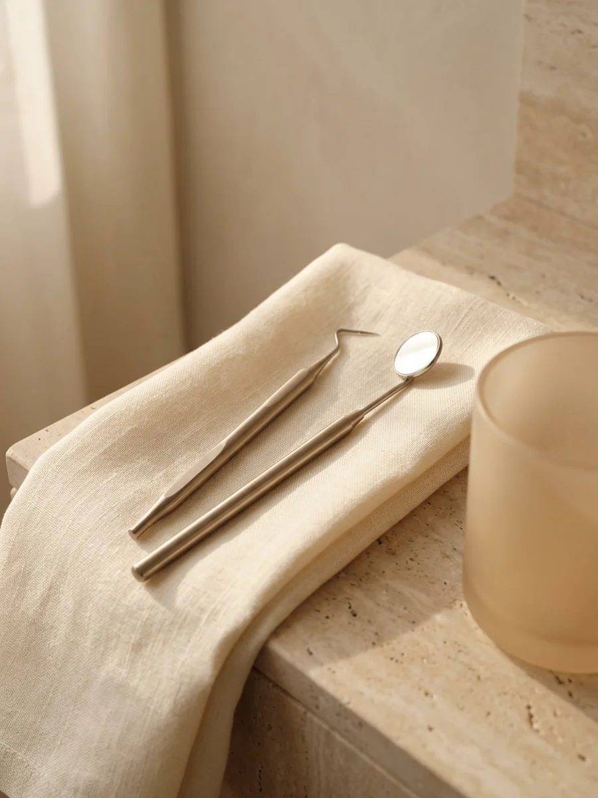
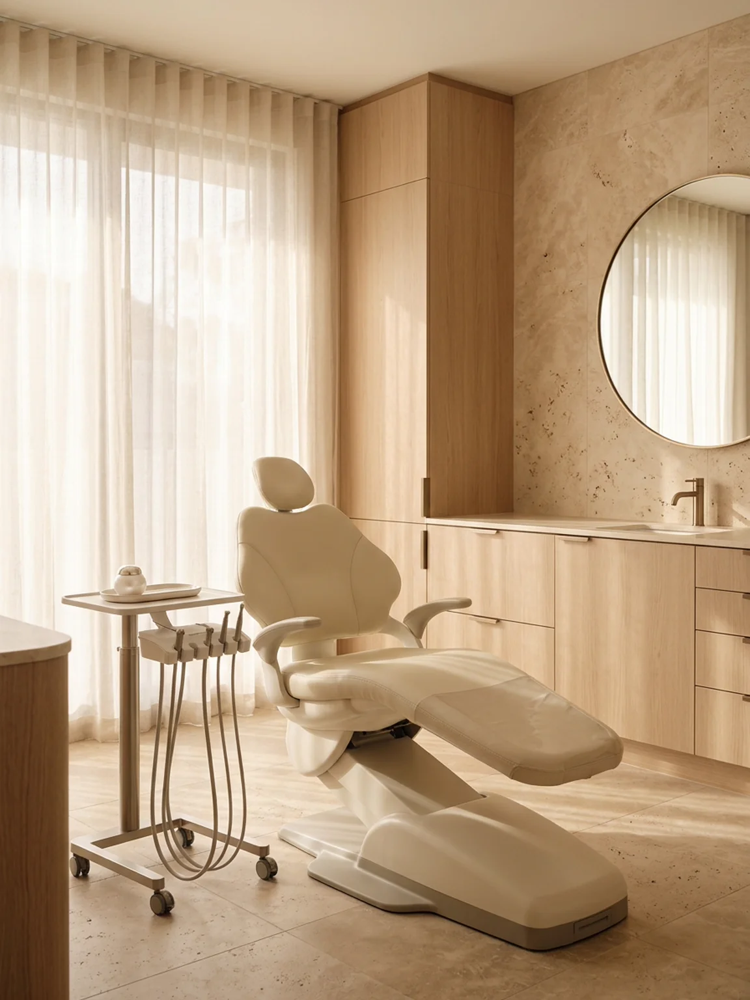
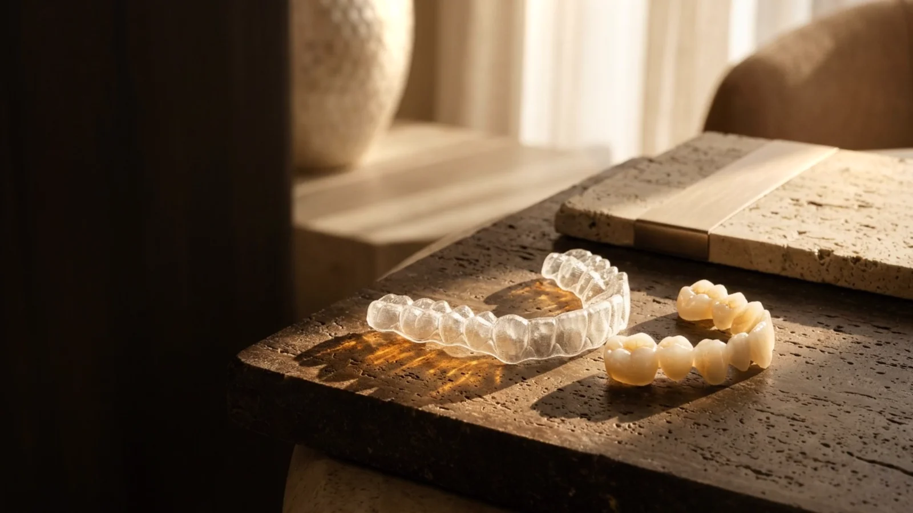
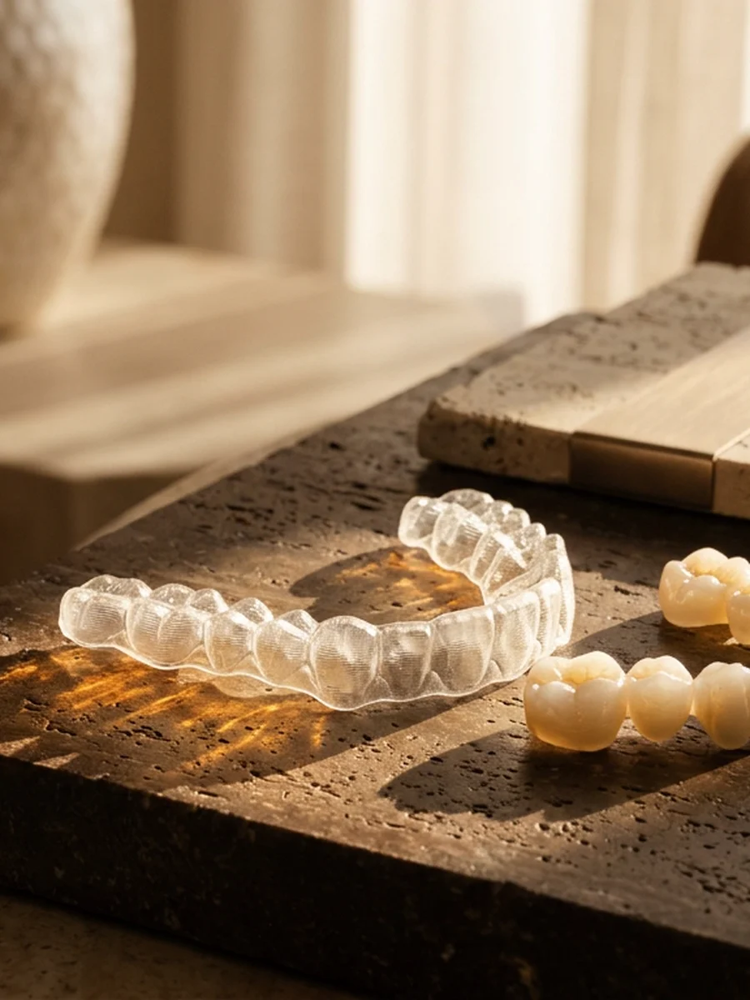
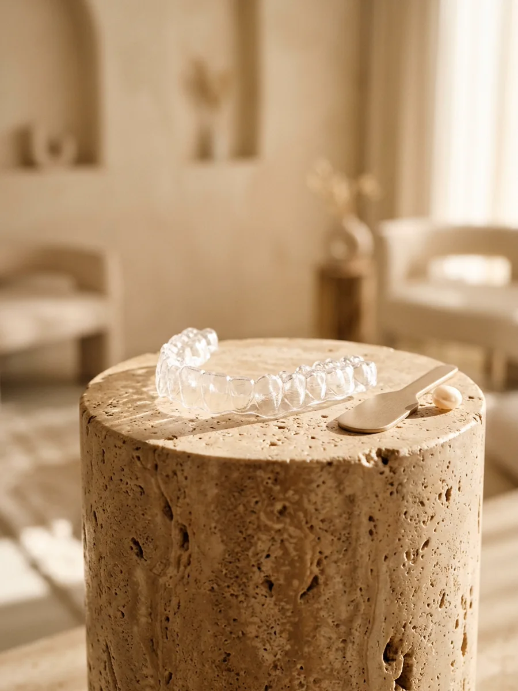

I
Urgences et soulagement
Rage de dents, carie profonde, dent cassée ou gencive douloureuse. Nous calmons d'abord la douleur dès l'ouverture à 07h30.
À Bouaké, juste en face du Grand Bazar, le Dr Kouakou Hilaire vous accueille avec douceur pour soulager vos urgences, soigner vos dents et sublimer votre sourire.
Ici, on prend le temps avant chaque geste.
Vous savez toujours ce que nous observons, comment l'anesthésie agit sans douleur et quel est le montant précis de votre soin, avec ou sans mutuelle.

Reporter un rendez-vous pendant des mois arrive à tout le monde. Souvent, on craint d'avoir mal ou de ne pas maîtriser le budget du traitement.
Le Dr Kouakou Hilaire et son équipe commencent chaque visite par un échange simple. L'anesthésie locale est posée avec patience, en attendant qu'elle fasse pleinement effet avant d'intervenir. Entre chaque patient, tous les instruments suivent un protocole complet de stérilisation.

Une restauration réussie ne doit ni se sentir en mâchant, ni se remarquer lorsque vous riez. Nous choisissons des teintes nacrées qui se fondent naturellement parmi vos propres dents.
Résines esthétiques de teinte naturelle, couronnes céramiques sur mesure, ancrages solides et solutions d'alignement discrètes adaptées aux adultes comme aux adolescents.
Du contrôle annuel des enfants au remplacement complet d'une dent absente, toute votre famille est suivie sur place à Bouaké.

Rage de dents, carie profonde, dent cassée ou gencive douloureuse. Nous calmons d'abord la douleur dès l'ouverture à 07h30.
Nettoyage doux aux ultrasons, polissage des taches de café ou de thé et soin des gencives qui saignent au brossage.

Couronnes esthétiques fixes, prothèses confortables et implants pour retrouver une mastication stable et un sourire complet.

Correction progressive de l'alignement dentaire chez l'enfant, l'adolescent et l'adulte, et premières visites rassurantes.
Prise en charge santé
Le Cabinet Dentaire Ivoire reçoit les assurés de plusieurs réseaux de prévoyance et mutuelles, dont la MUPEMENET-CI. Présentez simplement votre carte dès votre arrivée à l'accueil.
Prendre rendez-vousFaites défiler ou glissez le voile doré sur l'image, puis choisissez votre objectif pour préparer votre visite.
Le thé, le café et le tartre ternissent progressivement l'émail et irritent les gencives. Un détartrage doux aux ultrasons suivi d'un polissage soigné redonne fraîcheur et éclat naturel dès la première séance.
Sélection enregistrée pour votre demande : Éclat et détartrage
Choisissez ce qui vous amène et votre moment préféré : votre message s'ouvre directement dans le WhatsApp du cabinet au (+225) 07 07 17 11 17.